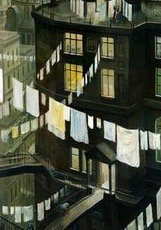
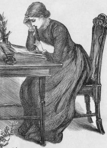
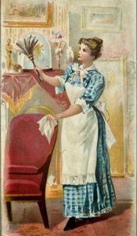

Encouraged by her pastor in Brooklyn,
New York, the author of this text wrote over four hundred hymn texts.
This is the only one to receive wide use, but it has been translated
into many languages. Her pastor composed this tune and, with her
consent, added the text of the refrain.
作者毫克斯女士(Annie S.
Hawks，1835~1918)，並不是一位特出的人物；她只是一個家庭主婦，一直做著家庭瑣碎的工作。她三十七歲時，在一個六月晴朗的早晨，當她正在作家事時，忽然深覺親近主的重要性，這是她以前所沒有經歷過的感覺。那時她想，一個人一面忙忙碌碌，一面又要有耐心與愛心，這是何等難能的事！人無論在快樂中，或在憂傷痛苦中，若離開了主，怎麼能夠活下去呢？正反覆思想、仔細揣摩這個感覺的時候，「我每時刻需你」的詩詞就在腦海�堹B現出來了。她立刻靠窗坐下，清晨的陽光照在她身上，信手拈來一張紙，揮筆寫出這首著名的詩歌。並抄寫了一份寄給她的教會牧師勞禮博士(Rev.
Lowry)。他見後甚是喜愛，代為作曲，並加上副歌，於主後一八七二年出版，刊登在美國浸信會主日學聯合年會的手冊�堙C由於其深能引起人們從內心的共鳴，因而甚受歡迎，從此廣泛被各宗派團體所採用。
因為本首詩的緣故，引發了另一名作詩家的靈感，寫出了另一首出名的詩歌，其過程饒有趣味。原來當一八九三年，在芝加哥世界博覽會場舉行基督教大會時，所唱的正是這首「我每時刻需你」。當時大佈道家惠特爾(Daniel
Whittle，1840~1901)也在場，有人向他批評本首詩說：「我們應當時時刻刻 (moment by
moment)需要主，而不是每隔一小時(every hour)纔需要主。」惠氏雖覺得本首詩的原意就是「隨時」需要主，不過，若能用moment by
moment來作另一首詩歌，表示我們分秒需要主，時刻需要主，倒也不錯。於是，他就當場集中注意力，寫出了一首
「時時刻刻與主同活」的著名奮興詩歌(《詩歌選集》第449首；《聖徒詩歌》第408首)。茲錄全詩如下：
時時刻刻 (moment by moment)需要主
(一) 與基督同死，祂死算我死； 與基督同起，我有祂生命；
"I Need Thee Every Hour"
Annie Hawks
The United Methodist Hymnal, No. 397
I need thee every hour,
most gracious Lord;
no tender voice like thine
can peace afford.
I need thee, O I need thee;
every hour I need thee;
O bless me now, my Savior,
I come to thee.
This hymn by Annie Sherwood Hawks (1835-1918) reflects the same general
characteristics as those of the other four 19th-century women hymn writers
discussed during Lent.
The women all employ first-person accounts that grow out a deep personal
piety, resulting in a language of intimacy between the singer and the Savior.
A New York native, Hawks displayed a gift for verse at the early age of 14,
contributing poems on a regular basis to a variety of newspapers. Though she
composed over 400 hymn texts, "I Need Thee Every Hour" is the only hymn of
hers that is still sung today.
Following her marriage to Charles Hawks in 1859, much of Hawks' life centered
on the domestic aspects of rearing three children. She was a member of Hanson
Place Baptist Church in Brooklyn, N.Y., where Dr. Robert Lowry, a prominent
writer of gospel songs, was her pastor. Lowry encouraged the gift that he saw
in Hawks' poetry.
We have a personal account of the genesis of "I Need Thee Every Hour": Hawks
writes, "One day as a young wife and mother of 37 years of age, I was busy
with my regular household tasks during a bright June morning [in 1872].
Suddenly, I became so filled with the sense of nearness to the Master that,
wondering how one could live without Him, either in joy or pain, these words
were ushered into my mind, the thought at once taking full possession of me --
'I Need Thee Every Hour. . . .'"
Lowry added a refrain as he wrote the music for the hymn.
Ira Sankey, the great revival musician for Dwight Moody, used this hymn at the
National Baptist Sunday School Association Convention the same year, 1872. It
then appeared in Royal Diadem for the Sunday School, an 1873 collection
compiled by Lowry and William Doane.
The phrase "I need thee" is at the center of the intimacy expressed in
this hymn. Its persistent repetition is a common device used by hymn writers
of the era. With the refrain added by Lowry, Hawks' hymn pleads "I need thee"
20 times when all five stanzas are sung!
This close relationship with Christ stands in stark contrast to more objective
hymns based, for example, on God's mighty acts and the theology of the
Trinity. Perhaps the Christian life exists somewhere between these two poles
of praising the all-powerful God and craving the intimacy of a personal
relationship with Jesus.
Many Christians today struggle with the language of submission that
accompanies some 19th-century gospel hymns. For example, Fanny Crosby
(1820-1915) begins the second stanza of "Blessed Assurance," with
"Perfect submission, perfect delight." Lowry's refrain adds "I come to thee" -
another note of submission - to Hawks' "I need thee every hour."
These personal devotional hymns by 19th-century women have their place.
They provide glimpses into the lives of women segregated from the positions of
leadership (even in the Church) by gender, leading lives separate from their
spouses primarily in domestic settings, and with little or no voice in the
public arena.
Now, the sermons and speeches made by so many men in the public sectors of
church and society have long been forgotten, but the songs of these women,
whose primary arena was the relative quiet of the home, are still sung.
Following the death of her husband, Hawks reflected on the power of her song:
"I did not understand at first why this hymn had touched the great throbbing
heart of humanity. It was not until long after, when the shadow fell over my
way, the shadow of a great loss, that I understood something of the comforting
power in the words which I had been permitted to give out to others in my hour
of sweet serenity and peace."
C. Michael Hawn, D.M.A., F.H.S., is University Distinguished Professor
Emeritus of Church Music and Adjunct Professor, and Director, Doctor of
Pastoral Music Program at Perkins School of Theology, Southern Methodist
University.
Note: Robert Lowry was Mrs. Hawks’s pastor. She gave the text of
her hymn to him, and he supplied the tune. The original had five
stanzas, but for some reason most hymn books I’ve seen omit CH-4,
which adds a significant thought.
CH-4) I need Thee every hour; teach me Thy will;
And Thy rich promises in me fulfil.
When it was first published, Annie Hawks’s hymn was
headed by John 15:5 (Jesus speaking), “Without Me you can do
nothing.” The text is found in what is sometimes called the Upper
Room Discourse, the Lord’s teaching passed on to His disciples, just
hours before He was crucified. John 15:1-16 deals with a kind of
parable or extended metaphor about The Vine and the Branches.
The Lord Jesus compares Himself to a grape vine (vs. 1), and His
disciples to branches of the vine (vs. 5). It is from the vine that
the branches receive life and nourishment, enabling them to bear
fruit. In the same way, it is as we remain in intimate fellowship
with the Lord that His people are equipped and energized to bear
spiritual fruit. This is also the basis for effective prayer (vs.
7), since it is how our desires are conformed to His will (cf. I Jn.
5:14).
Fruit-bearing is God’s will for His followers (Jn. 15:16). And we
can think of this in two particular ways. There is the inner fruit
of Christ-like character that the Lord wants to see produced in us
(cf. Gal. 5:22-23), and the outward fruit of our impact on the lives
of others, through our own witness and service for Christ (cf. Rom.
1:13; Col. 1:10). For both to happen we need the ongoing and
continual ministration of the Lord in our lives, through His Spirit.
CH-1) I need Thee every hour, most gracious Lord;
No tender voice like Thine can peace afford.
I need Thee, O I need Thee;
Every hour I need Thee;
O bless me now, my Saviour,
I come to Thee.
Mrs. Hawks identifies two particular things that can hinder our
fruitfulness: sin and suffering. When we succumb to temptation, our
sin breaks that intimacy of fellowship with the Lord that’s so
essential if we’re to be fruitful. It’s not that we lose our
salvation at such times. But there is certainly a loss of power and
spiritual effectiveness, and a loss of joy in the Lord.
Suffering’s effect is a little different. Severe and extended
suffering robs us of energy, and it can bring discouragement, a
sense of inadequacy, even challenging our sense of worth. Often we
are more vulnerable to temptation at such times, as well. But the
Lord can prepare us to triumph, even then (Phil. 4:13).
It was in just such a state that, by the grace of God, Charlotte
Elliott wrote the words of the hymnJust As I Am, some
thirty-six years before the present hymn was written. Miss Elliot
commented:
“He knows, and He alone, what it is, day after day, hour
after hour, to fight against bodily feelings of almost
overpowering weakness, languor and exhaustion, to resolve not to
yield to slothfulness, depression and instability.”
Though Annie Hawks didn’t realize it at the time when she wrote
her hymn, this struggle would be hers too, in later years, and she
would understand in a new way why her song had been an unusual
blessing to so many.
CH-2) I need Thee every hour, stay Thou nearby;
Temptations lose their power when Thou art nigh.
CH-3) I need Thee every hour, in joy or pain;
Come quickly and abide, or life is in vain.
Questions:
1) In what circumstances during the past week have you especially
sensed your need of the Lord?
2) Sometimes the special ministry of the Lord to a needy
individual is conveyed through a Christian brother or sister. Is
there someone you could help in this way today?
In
1872,
Annie
Sherwood Hawks (1835–1918) and her husband Charles were
living in Brooklyn, NY, when she wrote her most famous hymn, “I need thee
every hour.” Toward the end of her life, Hawks provided a detailed account
of the composition of the hymn and what it meant to her:
Whenever my attention is called to it, I am conscious of great
satisfaction in the thought that I was permitted to write the hymn “I need
thee every hour,” and that it was wafted out to the world on the wings of
love and joy, rather than under the stress of a great personal sorrow,
with which it has so often been associated in the minds of those who sing
it.
I remember well the morning, many years ago, when in the midst of the
daily cares of my home, then in a distant city, I was so filled with the
sense of nearness to the Master that, wondering how one could live without
Him either in joy or pain, these words “I need thee every hour” were
ushered into my mind, the thought at once taking full possession of me.
Seating myself by the open window in the balmy air of the bright June day,
I caught my pencil and the words were soon committed to paper, almost as
they are being sung today. It was only by accident, it would seem, that
they were set to music a few months after and sung for the first time at a
Sunday School Convention held in one of the large western cities. From
there they were taken farther west and sung by thousands of voices before
the echo came back to me, thrilling my heart with surprise and gladness.
For myself, the hymn was prophetic rather than expressive of my own
experience at the time it was written, and I do not understand why it so
touched the great throbbing heart of humanity. It was not until long years
after, when the shadow fell over my way—the shadow of a great loss—that I
understood something of the comforting in the words I had been permitted
to write and give out to others in my hours of sweet security and peace.
Now when I hear them sung, as I have sometimes, by hundreds of voices in
chorus, I find it difficult to think they were ever, consciously, my own
thought or penned by my own hand.[1]
Regarding the loss she said experienced later in life, her husband died in
Brooklyn in 1888 at age 55. They had three children, only one of whom, a
daughter, was still living in 1893.
II. Tune &
Publication
A few
years before writing the words to this hymn, she had established a
songwriting connection with composer
Robert Lowry
(1826–1899), who had been pastor of Hanson Place Baptist Church in
Brooklyn from 1861 to 1869, but left to take a professorship at his alma
mater, the University of Lewisburg in Pennsylvania. Hawks apparently sent
the lyrics to Lowry, and he composed a tune for it (usually called NEED).
The song was included in a special collection of hymns prepared for
National Baptist Sunday School Convention in Cincinnati, Ohio, November
20–22, 1872, at which
William
Doane was the music director and Robert Lowry was a guest
speaker.[2] This collection, New
Sacred Songs, Prepared Expressly for the National Baptist S. S. Convention
(Cincinnati, 1872), edited by William Doane, apparently does not
survive in any known libraries or collections.
At the
convention, Lowry was asked to address the issue of the extent of Sunday
School education, which he felt should be available to people of every
age:
We take the little folks—the toddlers—in the infant school; we take the
young men and the maidens; we take the old men and the old women; we take
them all; from the time they can begin to lisp or totter again—this time
with gray upon their heads, their whole bodies’ weight upon a staff. Let
them come in—all of them; come in—and if the little babe in arms, even,
can understand the simple story of how Jesus came into the world to save
sinners, even little sinners like that babe in arms, come in![3]
He also
called for a reform of Sunday School music:
Lift up the Sunday-school. Let there be a radical renovation of the whole
system, and let it extend to the singing. . . . We have a class of hymns
that no really intelligent person, who loves his intellectuality, would
attempt to sing. More and more we must weed out that miserable stuff. I
say to you here, in confidence, upon this platform, that, God sparing and
helping me, whatever he permits me to do in that line, I will do for the
Sunday-school hymnody.[4]
“I need thee every hour,” it seems, was an important contribution to that
end. It was first published broadly in
Royal Diadem for the Sunday School
(NY: Biglow & Main, 1873 | Fig. 1), in five stanzas.
Fig. 1. Royal
Diadem for the Sunday School (NY: Biglow & Main, 1873).
The hymn was soon after adopted into the evangelistic campaigns of gospel
composer and compiler,
Ira Sankey
(1840–1908). According to his autobiography, he “sang it for the first
time at Mr. Moody’s meetings in the East End of London. After that, we
often used it in our prayer meetings.”[5] It was included in the first
edition of Sankey’s famed Gospel
Hymns and Sacred Songs (1875 |
PDF) in the U.S., and in the British series
Later Songs & Solos (London:
Morgan & Scott, ca. 1877).
III.
Analysis
The
song resonates with Christians across time and place because it speaks to
a deeply rooted need to feel the presence of God in times of distress. It
echoes the cries of the Psalms, as in Psalm 22:19, “But you, O Lord, do
not be far off! O you my help, come quickly to my aid!” The first printing
of the song carried the Scripture reference of John 15:5, which says, “I
am the vine; you are the branches. Whoever abides in me and I in him, he
it is that bears much fruit, for apart from me you can do nothing.” In the
longer passage, Jesus stressed the importance of relying on him, seeking
his love, and keeping his commandments; by doing these things, his
followers would bear fruit, see their prayers answered, and experience his
joy.
by CHRIS FENNER
for Hymnology Archive
27 March 2019 rev. 2 May 2020
Story Behind I Need Thee Every Hour
This hymn's author, Annie Hawks, began writing poetry at the tender age of
14 and she had several published in a newspaper.
When she was 24, she married and she and her husband joined a church in
Brooklyn, New York, whose pastor was the hymn writer Robert Lowry. He
recognized Annie's talent and challenged her to use it to write hymns. He
told her that if she wrote the words, he would write the music.
The best way to tell how I Need Thee Every Hour came to be is through
Annie's own words. This happened in 1872. "I remember well the circumstances under which I wrote the
hymn. It was a bright June day, and I became so filled with the sense of the
nearness of my Master that I began to wonder how anyone could live without
Him, in either joy or pain. Suddenly, the words I need Thee every hour,
flashed into my mind, and very quickly the thought had full possession of
me.
Seating myself by the open windows, I caught up my pencil and committed the
words to paper - almost as they are today. A few months later Dr. Robert
Lowry composed the tune Need, for my hymn and also added the refrain.
For myself, the hymn, at its writing, was prophetic rather than expressive
of my own experiences, for it was wafted out to the world on the wings of
love and joy, instead of under the stress of great personal sorrow, with
which it has often been associated.
At first I did not understand why the hymn so greatly touched the throbbing
heart of humanity. Years later, however, under the shadow of a great loss, I
came to understand something of the comforting power of the words 1 had been
permitted to give out to others in my hours of sweet serenity and peace."
Annie Sherwood Hawks (May 28, 1836
- January 3, 1918) was an American poet
and gospel hymnist who
wrote a number of hymns with her pastor, Robert
Lowry. She contributed to several popular Sunday
school hymnbooks, and wrote the lyrics to a number of well-known
hymns including: "I Need Thee Every Hour"; "Thine, Most Gracious Lord";
"Why Weepest Thou? Who Seekest Thou?"; "Full and Free Salvation" and "My
Soul Is Anchored".[1]
Annie Sherwood was born on May 28, 1836,
in Hoosick, New
York. Her ancestry on her father's side was English, and on her
mother's side, remotely, Holland Dutch. She was educated in the public
schools and in the Troy Seminary.[2]
She was never graduated from any school,
but she always had a passion for books and read widely.[3] By
age 14, she was submitting poems to a local newspaper.[4]
The first poem which she published
appeared in a Troy,
New York, newspaper. That poem at once attracted attention and was
followed by others which were printed in various local papers.[3]
She married Charles Hial Hawks in 1857 or
1859, a member of a New York banking firm,[2] and
a resident of Hoosick. In January, 1865, the Hawks removed to Brooklyn.[3] They
attended the Hanson Place Baptist Church where Lowry was pastor. Lowry,
himself a hymn-writer, encouraged Hawks to compose her own hymns.[4]
In 1868, her pastor and friend, Rev. Dr.
Robert Lowry, requested her to turn her attention to hymn writing, and
her first hymns were written in that year. Among others, these included,
"In the Valley", "Good Night", "Why Weepest Thou?", “Who'll Be the Next
to Follow Jesus,” and “In the Valley.”[2] Lowry
set all of Hawks' hymns to music. Though Hawks was chiefly known as a
writer of hymns, she also wrote many poems.[3]
In 1872, the hymn by which Hawks is most
widely known, "I Need Thee Every Hour", was written. It is said to have
been translated into more foreign languages than any other modern hymn
at the time of her death.[2] Hawks
stated:— "For myself, the hymn was prophetic rather than expressive of
my own experiences, for it was wafted out to the world on the wings of
love and joy, instead of under the stress of personal sorrow."[5] Lowry,
who wrote the music, went on to say: "I Need Thee Every Hour" was
written by Mrs. Annie S. Hawks, in 1872, in Brooklyn, New York. I
believe it was the expression of her own experience. It came to me in
the form of five simple stanzas, to which I added the chorus to make it
more serviceable. It inspired me at its first reading. It first appeared
in a small collection of original songs prepared for the National
Baptist Sunday-school Association, held in Cincinnati, Ohio in
November, 1872, and was sung on that occasion."[6]
Hawks was the mother of three children.
She identified with the Baptist denomination.[3] After
the death of her husband in 1888, she moved to Bennington, Vermont to
live with her daughter and son-in-law. She died there on January 3,
1918, and is interred at the Hoosick Rural Cemetery.[7]
One
morning in June 1872, Annie Sherwood Hawks (1836-1918) was doing her
housework in Brooklyn, NY, when a poem began to take shape in her mind.
Hawks did not postpone her creativity. She seized the moment, took a break
from her busy list of things to do, sat down, and penned the words to “I
NEED THEE EVERY HOUR.”
Nor did Hawks modestly tuck her poem away. She honored her creative talents
and spiritual longings by taking them seriously. Hanging up her apron, she
took the poem to her pastor, Robert Lowry, at the Hanson Place Baptist
Church. Dr. Lowry promptly set her words to music and saw to its publication
later that same year.
SHE PERSISTED IN THE
CREATIVE LIFE

Annie
had been writing poems since age 14 and was regularly published in
newspapers. She attended public schools and the Troy Seminary, but never
earned a diploma.
On her own, she continued to read, study, and write, even after she and her
husband moved from the small town of Hoosick, NY to Brooklyn to raise a
family.
“I need thee” is repeated 20 times in this intimate hymn about the nearness
of Jesus. By her own admission, Hawks didn’t understand “why this hymn had
touched the great throbbing heart of humanity” until years later, during a
period of loss and grief. Then, at last, she felt “something of the
comforting power” of words from her own pen.
After her husband’s death, Hawks moved to Bennington, VT to live with her
daughter and son-in-law. By the end of her life, she’d penned lyrics to 400
hymns.
MARY, MARTHA, AND MALE
PRIVILEGE
The anecdote of how Annie briefly put aside her housework for a
soul-nourishing moment of creativity recalls the story in Luke 10: 38-42.
“Jesus, Mary, & Martha” by Aaron and Alan Hicks
Martha was eager to make Jesus and his disciples feel welcomed in her home.
The work she was doing was essential. Who can blame her for worrying about
details and feeling resentful that her sister wasn’t helping?
Mary, seemingly oblivious, remained seated beside the male disciples — a
brash act, rare for a woman in first century Palestine.
Counter-cultural Jesus defied patriarchal expectations when he gave Mary the
nod of approval, signaling that women have the right to be part of the
conversation.
The story of Mary and Martha has been used to shame and divide women, as if
we had to choose between doing the work (often unpaid) of providing nurture
and comfort or engaging in the world of ideas. In reality, we are both Mary
and Martha.
The false debate diverts attention from the radical point Jesus was making —
that women are entitled to pursue our potential, fully engaged in the world.

CARPE
DIEM, SEIZE THE DAY!
“If only I had time I’d…” and then we name the creative impulse tugging at
our sleeve — write a book or a song, sew a quilt, bake a cake, run a
marathon, learn to snowboard, brush up on a foreign language, think up new
computer software, dance, paint, study, do a yoga stretch or hip hop move,
meditate, pray, dream.
Sometimes the options remain out of reach due to economic hardship or the
demands of basic survival in the myriad nightmares which distort human life
around the globe. Silences imposed by war, violence, abuse, or poverty are
expressions of societal sin which Christians are called upon to lament and
remedy.
Annie Hawks
But other times, our calendars overflow with work or social obligations, or
the trivial and mundane, precious moments spent in front of the TV,
cellphone, or computer screen, scrolling, scrolling, or too many hours spent
shopping.
Or we give in to worries that we’re not good enough. The impulse to create
or grow may feel self-indulgent or foolish in a society of experts,
where creative success is measured by monetary reward or recognition. We
hang our children’s artwork on the refrigerator and call it a day.
The example of Annie Hawks and the story of Martha and Mary, however, tell
us that we are entitled to honor our creative impulses, our yearning for
insight and expression. It is our birthright to use the gifts God gave us.
Carpe diem!

TO
GO DEEPER
“History of Hymns:I
Need Thee Every Hour” by C. Michael Hawn, UMC Discipleship Ministries
hymnary.org— Words and music to “I Need Thee Every Hour”
“martha
& mary: jesus the feminist& the destruction of privatized
religion” by Matt Anslow, at life.remixed (because theology should turn the
world upside down)


.jpg)